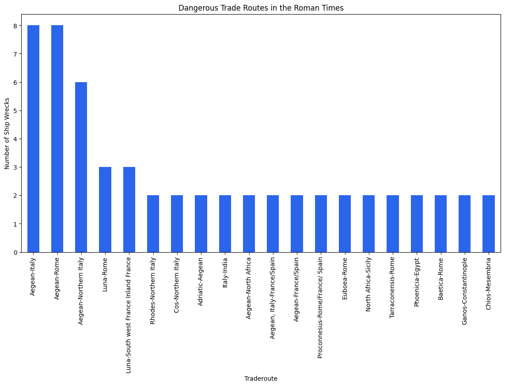
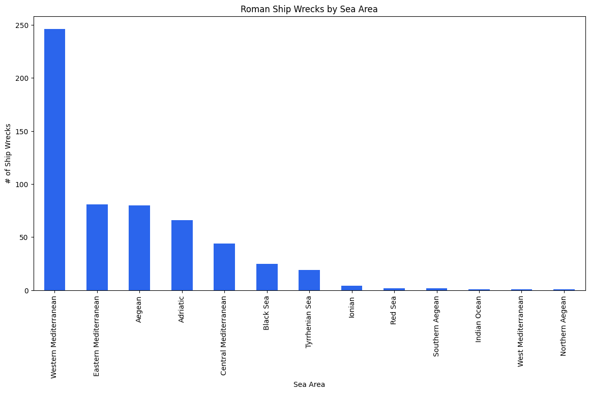
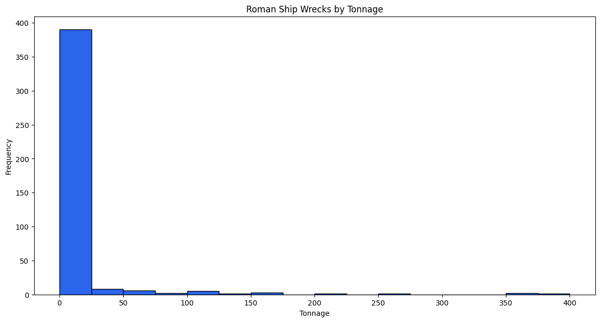
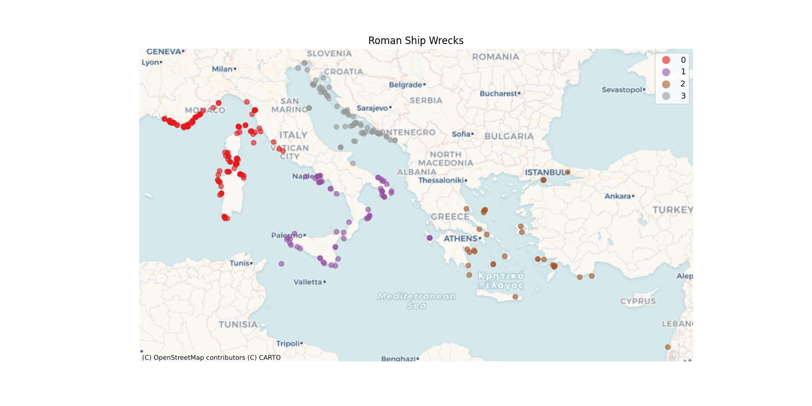

Defying Neptune: An Investigation into Roman Ship Wrecks
Gene Foxwell

Introduction
See the world! Join the Navy! It’ll be fun! That’s what our hero – the plucky young Marcus – has heard his entire life. The time has come! His family is powerful, so he has his pick of assignments, but how does he decide which one?
Working on a ship is dangerous work! Plenty of things could wrong, leaving our young hero to languish in the murky depths of the Mediterranean Sea!
Marcus wants adventure, not an eternity in the company of Neptune! What’s the best way for him to make his choice?
We’re going to use data shared by the Oxford Roman Economy Project to dive into just this question – and by the end of it, we’ll have a rule of thumb Marcus can use to make his choice!
Let’s get started!
The Data Marcus never had...
Sadly, for Marcus, he didn’t have access to the Oxford Roman Economy Project to help him make his decision. We do though! (but let’s not be too smug about it eh?) This dataset is treasure trove of recorded Roman shipwrecks up until AD 1500. It includes information such as the Sea area, rough Latitude / Longitude, Estimated Tonnage of the Vessel, as well as the Trade route the vessel was believed to be part of.
All good information that Marcus could ask the captain about before hopping onboard!
How to choose?
Without access to the joys of Data Science, Marcus is left with a simple option: Ask questions!
Let’s walk through some natural questions our hero might ask to help them choose their fate…
How Dangerous is this Trade Route compared to the others?
The Oxford Roman Economy Project dataset doesn’t give us trade routes directly. Instead, it gives us the believed place of origin and the believed destination for each shipwreck. We’ll use this to create the list trade routes by claiming a trade route is “Place of origin” – “Place of destination”.
Unfortunately for us, even the Oxford Roman Economy Project doesn’t provide us with perfect information. Not every Place of origin or Place of destination is known. As we can’t say much about trade routes we can’t define, we cleaned those out, then visualized what was left in a nice bar chart:

At first glance, it looks like traveling to Italy or Rome is a bad idea! While technically, that might be true – after all there are a lot of shipwrecks on those routes – it’s not very helpful advice. Nearly every ship Marcus can choose from is coming to or leaving Rome!
Alright, knowing the trade route won’t help Marcus very much. What about knowing which seas the ship will sail in? Will that help?
On which seas does this ship sail?
What about the various seas that surround Rome and Italy in general? Are some of those more dangerous than the others?
To help Marcus’s answer this, we’ll look at the Sea area column from this dataset. Like the trade routes before it, this data is not complete. We simply don’t know the exact sea that every discovered shipwreck was in when it sank.
Still, we’ll do what we can and visualize the data we have:

Oh my! The Western Mediterranean Sea certainly appears to be a hostile work environment! Some of this could be explained by the Roman Empire having grown Westwardly at first rather than Easterly – giving more opportunities for Roman Ships in that area. It’s also possible that the Western Mediterranean Sea is a far more popular destination than the rest of the Empire.
Still – maybe Marcus should think twice about sailing to the West…
How big is your ship?
But hey, maybe Marcus doesn’t have to ask questions? What if he just decided to go by the adage… BIGGER IS BETTER!
We can get a rough idea of how big the ships were by using the Estimated Tonnage column from our source dataset. Let’s look at a histogram of how these shipwrecks were distributed by size and see if we can find out if size really does matter!

Well, look at that – BIGGER IS BETTER after all. Well, for ships anyway.
Before we celebrate, lets keep in mind that the dataset only tells us what ships were found. There could easily have been 10x or more as many smaller vessels as larger ones. We can’t tell this from the dataset.
On the flip side, larger ships can be easier to control and more stable during high winds. On the whole, perhaps Marcus wouldn’t be steered wrong with the bigger is better motto.
What path do you take?
Alright, so we know the Western Mediterranean Sea is a potential hotspot. We know that it’s at least plausible that bigger is better. What about the routes themselves? Are there places we want to avoid? Shipwreck magnets that strike fear into the hearts of Roman Sailors?
We have the rough latitude and longitude of the shipwrecks from the dataset. (Precise data is not provided to discourage folks from diving down and stealing from the wreckages) We can plot that on a scatter plot and see if any clusters present themselves.

The nautical world certainly is filled to the brim with danger, isn’t it? Still, some places appear to a bit less hostile than others.
Zone 0 (red) has a lot of tightly packed shipwrecks following the southern coast of Monaco and surrounding the islands of Sardegna and Corse. Without further information on the frequency of ship travel in these areas, Marcus should consider steering clear (or demanding hazard pay!)
Zone 3 (grey) is a coastline of death! Shipwrecks litter the coast of Croatia and Montenegro. Its not clear what the cause is – but Marcus may want to stay away from that coast if he values his life!
Zone 1 (purple) and Zone 2(brown): Here the shipwrecks are spread out a bit more – there’s no clear “coast of death” in these zones. While they are clearly not entirely without danger – based on the data we have, they seem to offer a safer work environment. Marcus may want to see out ships that work in these zones.
The Takeaway?
Marcus should look for the biggest ship he can find that’s headed for either Southern Italy, or to the seas near Greece and Turkey. A big ship in a place with fewer clear navigational hotspots gives him a reasonable shot at safety.
Of course, safety isn’t the only thing that matters – and frankly there is no route he can take that is entirely without danger. But what’s adventure without a little danger, eh? After all, if he wanted to be perfectly safe, he could’ve stayed home and enjoyed some nice Italian wine.
Fair winds Marcus, and good luck!
References
- Strauss, J. (2013). Shipwrecks Database. Version 1.0. Accessed (date): oxrep.classics.ox.ac.uk/databases/shipwrecks_database/
- Interactive Maps and History of the Roman Empire